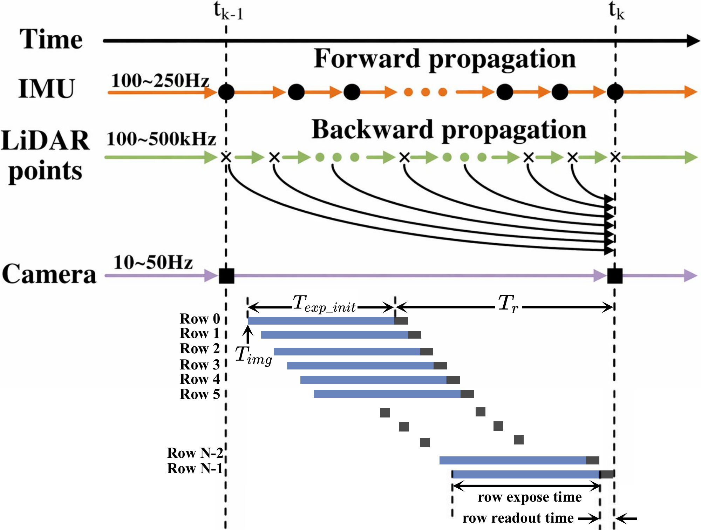
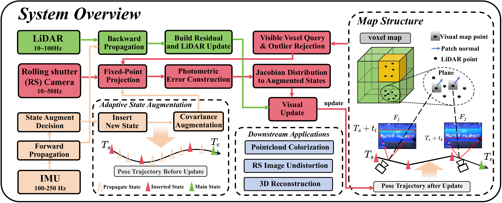
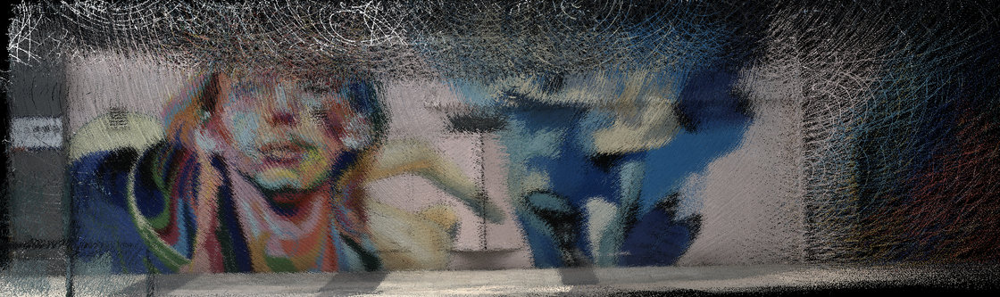
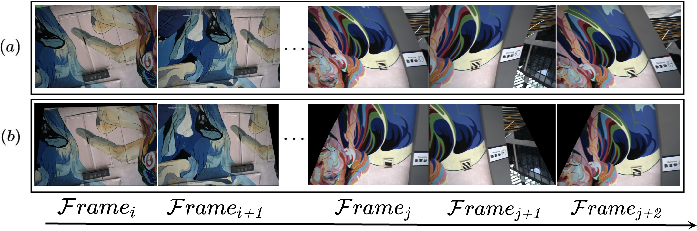

自适应状态增广
在 IMU 传播过程中，根据估计的角加速度与线加速度，在图像读出期间按需插入克隆位姿。
IEEE Robotics and Automation Letters / 2026
1 香港大学机械工程系2 Spatial Robotics Limited
本文提出 FAST-LIVO-RS，一种面向卷帘快门（RS）相机的直接式激光雷达–惯性–视觉里程计系统。当卷帘快门图像按全局快门（GS）模型处理时，不同图像行的成像几何不再一致。在直接式里程计系统中，这会影响光度优化和点云着色，并降低系统在快速运动下的鲁棒性。为刻画传感器逐行读出一帧图像期间的运动，FAST-LIVO-RS 在顺序误差状态迭代卡尔曼滤波器（ESIKF）中引入自适应状态增广：在 IMU 状态传播过程中，根据估计的角加速度和线加速度动态插入克隆状态，以适应运动变化的分段线性模型近似帧内轨迹。在此基础上，系统通过不动点迭代求解投影对应的行时刻，并将雅可比矩阵分配到相邻克隆状态所定义的区间两端，从而在每一行对应的相机位姿处线性化光度残差，完成与逐行成像一致的直接视觉更新。视觉地图同样采用逐行几何来维护图像块、更新参考帧，不再假设整帧共享读出结束时的位姿。我们在自采卷帘快门数据集和四项 GrandTour 任务上评估了 FAST-LIVO-RS，并使用同步的卷帘快门与全局快门相机进行对照实验和三维重建。结果表明，对逐行读出时刻建模能提高系统在卷帘快门序列上的鲁棒性，其定位和重建质量与使用同步全局快门相机的 FAST-LIVO2 相当。
全局快门相机的所有像素行同时曝光，卷帘快门相机则逐行曝光。看图 2 的下半部分：从首行到末行，每一行的曝光时间窗都比上一行晚一些。论文中的两套手持设备首末行的曝光时刻相差 49.6 ms。如果相机在这段时间内运动，同一帧的不同行便对应不同的相机位姿。
直接法用对应图像块的亮度差（光度残差）更新位姿。快速运动时，若用同一个相机位姿投影所有激光地图点，有些点就会落到错误的像素上，算法比较的也不再是同一处纹理。点云着色同样依赖这个投影：靠近高对比边缘的点，可能取到边缘另一侧的颜色。

系统在 IMU 传播过程中估计帧内运动，用像素行曝光时刻的位姿计算视觉残差，再用同一套逐行投影维护图像块并给地图上色。

在 IMU 传播过程中，根据估计的角加速度与线加速度，在图像读出期间按需插入克隆位姿。
通过不动点投影求出每个光度残差对应的行时刻和相机位姿，再将雅可比分配到相应克隆区间的两个端点。
参考图像块维护、视觉地图点更新和激光点云取色使用同一套卷帘几何。


FAST-LIVO-RS 利用估计出的逐行相机旋转，将图像重映射到读出结束时的相机位姿，以校正快速转动时竖直结构出现的剪切和倾斜。

论文在六段同步采集的 JT 数据上使用同一 3DGUT 后端，对比三种前端配置。PSNR 与 SSIM 评估的是测试视角的重建图像。
| 序列 | FAST-LIVO-RS + RS | FAST-LIVO2 + RS | FAST-LIVO2 + GS |
|---|---|---|---|
| JT-O1 | 25.12 / 0.778 | — | 26.06 / 0.770 |
| JT-O2 | 24.21 / 0.742 | 21.70 / 0.719 | 25.56 / 0.755 |
| JT-O3 | 29.43 / 0.857 | 28.82 / 0.829 | 29.67 / 0.850 |
| JT-I1 | 31.61 / 0.896 | 29.68 / 0.845 | 31.96 / 0.882 |
| JT-M1 | 26.51 / 0.862 | 24.65 / 0.810 | 26.06 / 0.857 |
| JT-M2 | 23.90 / 0.855 | 20.49 / 0.809 | 24.58 / 0.865 |
RS：卷帘快门；GS：全局快门。破折号表示未得到有效重建。
@article{zhu2026fastlivors,
author = {Zhu, Haoda and Hong, Xiangyu and Zheng, Chunran and Li, Haotian and Zhang, Fu},
title = {Rolling-Shutter Aware {LiDAR}-Inertial-Visual Odometry},
journal = {IEEE Robotics and Automation Letters},
year = {2026},
volume = {11},
number = {12},
pages = {14652--14659},
doi = {10.1109/LRA.2026.3747596}
}